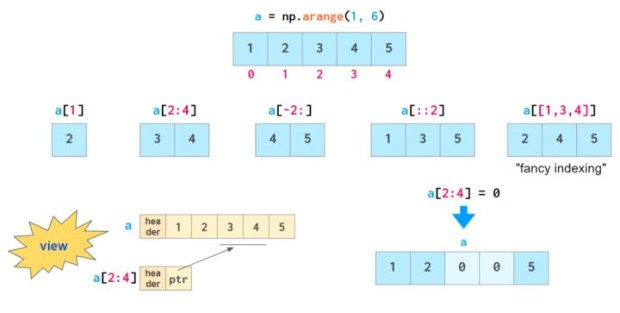
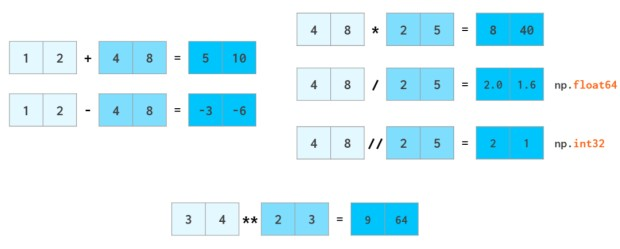
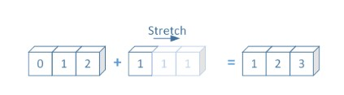

Numpy 简介
Contents
Numpy 简介#
numpy 是一个功能强大的 python 库，主要用于对多维数组执行计算。numpy 这个词来源于两个单词 Numerical 和 Python。numpy 提供了大量的库函数和操作，可以帮助大家轻松地进行数值计算。这类数值计算广泛用于科学计算中，更多专业的介绍可以查看这篇论文 [HMvdW+20]。
本教程使用的 python 编程环境中已经提供numpy包了，能直接使用。
本节我们将了解什么是 Numpy 数组（Numpy Array）；python 列表和 numpy 数组之间的主要区别以及 numpy 数组的一些基本概念。
1 什么是 Numpy 数组#
numpy 提供的最重要的数据结构是一个称为 numpy 数组的强大对象。numpy 数组是通常使用的 python 列表的扩展。numpy 数组配备了大量的函数和运算符，可以帮助我们快速编写各种类型计算的高性能代码。
与 python 列表一样，numpy 数组也由有序值（称为元素）组成，并且还使用索引来组织和操作。numpy 数组的一个关键特征是数组中的所有元素都必须是相同类型的数据（即整数、浮点数、文本、字符串等）。
2 Python List 和 Numpy Array 的区别#
虽然 python 列表和 numpy 数组有相似之处，因为它们都是使用索引来帮助我们来存储和访问数据的值的集合，但这两种数据结构之间存在一些关键区别：
（1）与 python 列表不同，numpy 数组中的所有元素必须具有相同的数据类型;
（2）与 python 列表不同，numpy 数组不是通过添加/删除/替换数组中的元素来编辑的。相反，每次以某种方式操作 numpy 数组时，它实际上都会被删除并重新创建。
（3）numpy 数组可以沿多个维度（例如行，列）存储数据。这是使得 numpy 数组成为大型数据集的非常有效的数据结构。
3 创建 Numpy 数组#
创建一个 ndarray 只需调用 numpy 的 array 函数即可：
numpy.array(object, dtype = None, copy = True, order = None, subok = False, ndmin = 0)
object：数组或嵌套的数列
dtype：数组元素的数据类型，可选
copy：对象是否需要复制，可选
order：创建数组的样式，C为行方向，F为列方向，A为任意方向（默认）
subok：默认返回一个与基类类型一致的数组
ndmin：指定生成数组的最小维度
# 导入numpy包，并使用缩写
import numpy as np
# 示例1：创建一维数组
a = np.array([1, 2, 3])
a
array([1, 2, 3])
# 示例2：创建多维度数组
b = np.array([[1, 2], [3, 4]])
b
array([[1, 2],
[3, 4]])
4 使用Numpy 数组#
接下来是一些常见的使用Numpy数组执行运算的操作
4.1 numpy 数组索引与切片#
一旦将数据存储在数组中，nunpy 便会提供简单的方法将其取出：

上面展示了各式各样的索引，例如取出某个特定区间，从右往左索引、只取出奇数位等等。 但它们都是所谓的view，也就是不存储原始数据。并且如果原始数组在被索引后进行更改，则不会反映原始数组的改变。
# 注意这个a和上面的a重名，那么哪一个是在时间上靠后执行的，a实际上就是那一个。
a = np.arange(1, 6)
print("a=", a)
# 索引
print("a[1]=", a[1])
# 切片
print("a[2:4]=", a[2:4])
print("a[-2:]=", a[-2:])
print("a[::2]=", a[::2])
print("a[[1,3,4]]=", a[[1, 3, 4]])
print("修改a[2:4]后：")
a[2:4] = 0
print("a=", a)
a= [1 2 3 4 5]
a[1]= 2
a[2:4]= [3 4]
a[-2:]= [4 5]
a[::2]= [1 3 5]
a[[1,3,4]]= [2 4 5]
修改a[2:4]后：
a= [1 2 0 0 5]
4.2 向量运算#
算术运算是 numpy 速度最引入注目的地方之一。numpy 的向量运算符已达到 C++ 级别，避免了 python 的慢循环。 numpy 允许像普通数字一样操作整个数组（加减乘除、整除、幂）：

arr1 = np.array([1, 2])
arr2 = np.array([4, 8])
arr1 + arr2
array([ 5, 10])
arr1 - arr2
array([-3, -6])
arr3 = np.array([2, 5])
arr2 * arr3
array([ 8, 40])
arr2 / arr3
array([2. , 1.6])
arr2 // arr3
array([2, 1])
np.array([3, 4]) ** np.array([2, 3])
array([ 9, 64])
4.3 数组广播#
不同形状和维度的数组在某些情况下, numpy 可以执行加减乘除的运算，这种机制就叫做广播机制。 下面是图片和代码示例：

import numpy as np
a = np.arange(3)
b = 1
a + b
array([1, 2, 3])
4.4 常用统计函数#
当 axis=0 时，表示沿着纵轴（行）计算。当 axis=1 时，表示沿着横轴（列）计算。默认时计算一个总值。
import numpy as np
arr = np.arange(9).reshape(3, 3)
print(arr)
### sum,mean,std,var,min,max,argmax,argmin,cumsum,cumprod
print("arr的和为:", arr.sum(axis=1)) ##按照列的方向，横着求和
print("arr的和为:", arr.sum(axis=0)) ##按照行的方向，竖着求和
print("arr的平均值为：", np.mean(arr, axis=1))
print("arr的标准差为：", np.std(arr, axis=1))
print("arr的方差为：", np.var(arr, axis=1))
print("arr的最小值为：", np.min(arr, axis=1))
print("arr的最大值为：", np.max(arr, axis=1))
print("arr的最大值下标为：", np.argmax(arr, axis=1))
print("arr的最小值下标为：", np.argmin(arr, axis=1))
print("arr的累计和为：", np.cumsum(arr, axis=1))
print("arr的累计积为：", np.cumprod(arr, axis=1))
[[0 1 2]
[3 4 5]
[6 7 8]]
arr的和为: [ 3 12 21]
arr的和为: [ 9 12 15]
arr的平均值为： [1. 4. 7.]
arr的标准差为： [0.81649658 0.81649658 0.81649658]
arr的方差为： [0.66666667 0.66666667 0.66666667]
arr的最小值为： [0 3 6]
arr的最大值为： [2 5 8]
arr的最大值下标为： [2 2 2]
arr的最小值下标为： [0 0 0]
arr的累计和为： [[ 0 1 3]
[ 3 7 12]
[ 6 13 21]]
arr的累计积为： [[ 0 0 0]
[ 3 12 60]
[ 6 42 336]]
还有很多内容，但是这里篇幅所限，我们就介绍一些最基本的概念，更多内容大家可以自己在实际使用过程中从 官方文档 慢慢学习，我们后面有一个完整例子，会介绍其中用到的numpy运算操作。